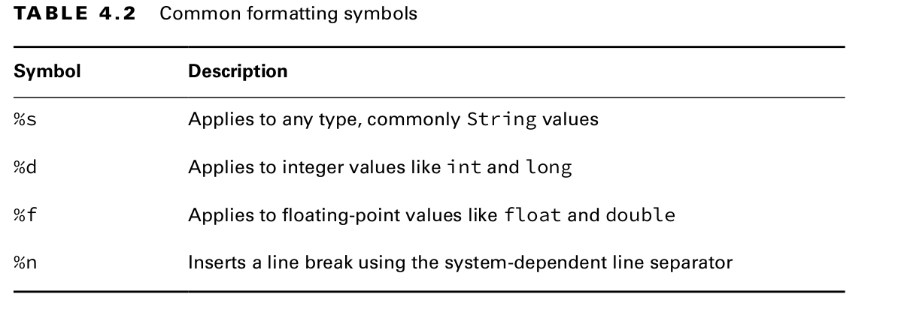

String.format
Table of Contents
1. .format()
Formats String values using formatting flags.
Two of the methods take the format string as a parameter, and the other uses an instance for that value.
One method takes a Locale.
The method parameters are used to construct a formatted String in a single method call, rather than via a lot of format and concatenation operations.
They return a reference to the instance they are called on so that operations can be chained together.

1.1. Signature
public static String format(String format, Object args...) public static String format(Locale loc, String format, Object args...) public String formatted(Object args...)
var name = "Kate"; var orderId = 5; // All print: Hello Kate, order 5 is ready System.out.println("Hello " + name + ", order " + orderId + " is ready"); System.out.println(String.format("Hello %s, order %d is ready", name, orderId)); System.out.println("Hello %s, order %d is ready".formatted(name, orderId)); var name = "James"; var score = 90.25; var total = 100; System.out.println("%s:%n Score: %f out of %d".formatted(name, score, total)); /* OUTPUT: */ // James: // Score: 90.250000 out of 100
1.1.1. Exam Trick
- Mixing
datatypes may cause exceptions at runtime.
For example, the following throws an exception because a floatingpoint number is used when an integer value is expected:
var str = "Food: %d tons".formatted(2.0); // IllegalFormatConversionException
By default, %f displays exactly six digits past the decimal.
If you want to display only one digit after the decimal, you can use %.1f instead of %f.
The format() method relies on rounding rather than truncating when shortening numbers.
For example, 90.250000 will be displayed as 90.3 (not 90.2) when passed to format() with %.1f.
var pi = 3.14159265359; System.out.format("[%f]",pi);// [3.141593] System.out.format("[%12.8f]",pi);// [ 3.14159265] System.out.format("[%012f]",pi);// [00003.141593] System.out.format("[%12.2f]",pi);// [ 3.14] System.out.format("[%.3f]",pi);// [3.142]